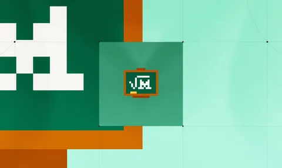

Mistral AI releases Leanstral, an open-source code agent for Lean 4
Mistral AI released Leanstral, with 6B active parameters and weights under an Apache 2.0 license. On FLTEval, a new suite built from pull requests to the FLT project, Leanstral pass@2 scores 26.3, beating Sonnet by 2.6 points while costing $36 to run versus Sonnet's $549.

Checked against: mistral.ai
Published in the week of Mar 19, 2026.